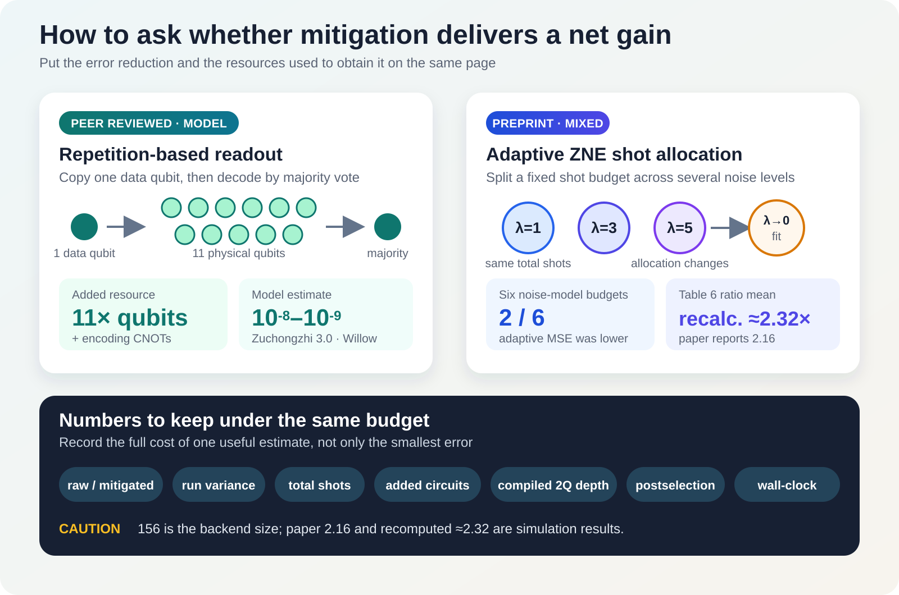

Saying that a quantum computer’s error has decreased may sound like enough. But if the result required eleven times as many qubits, circuits repeated at three noise levels, and several times as many measurement shots, it is not yet clear that the computation as a whole improved. The relevant test is whether the same hardware and time produced a more useful answer.
This problem will not disappear soon. On today’s devices, which lack full error correction, gate errors, readout errors, and decoherence alter computational results. Instead of building logical qubits that continually detect and correct physical errors, error mitigation reruns circuits or post-processes measurements to reduce errors in expectation values and samples. The implementation threshold is lower, but the price is paid in shots, circuit count, variance, or auxiliary qubits.
Two studies made public in late August 2026 expose these costs in different places. A peer-reviewed paper calculated whether measurement errors could be sharply reduced by adding up to 10 auxiliary qubits per data qubit and reading the result by majority vote. A separate preprint ran small circuits on an IBM Heron device, then used a noise model built from device calibration data to compare how a limited shot budget should be allocated across ZNE circuits.
The two papers neither address the same error nor compete with each other. There is still a clear reason to read them together: if additional qubits, CNOTs, circuit repetitions, shots, and total runtime are omitted from the accuracy figure, the price of the improvement disappears.
First, separate what the two studies actually did
| Category | Readout repetition coding | IBM Heron and adaptive ZNE |
|---|---|---|
| Research status | Peer-reviewed paper in npj Unconventional Computing | arXiv v1 preprint |
| Error being addressed | Readout errors that mistake 0 for 1 or 1 for 0 at final measurement | Bias and variance when extrapolating expectation values from several noise levels |
| Method actually used | Classical numerical calculations with an independent-error analytic model and published device error rates | Ideal and noisy numerical calculations, plus small-circuit runs on ibm_marrakesh |
| Additional cost | Up to 10 auxiliary qubits per data qubit and encoding CNOTs | Circuits at several noise factors, pilot shots, and extrapolation that can increase variance |
| Representative result | Predicted readout errors of \(10^{-8}\)–\(10^{-9}\) at \(k=9,11\) for two low-error device profiles | Adaptive MSE was lower in only 2 of 6 shot budgets in the noise model; the Table 6 ratios average about 2.32, although the paper reports 2.16 |
| Not yet demonstrated | Actual QPU execution, correlated readout errors, routing, total shots, and wall-clock time | A 156-qubit circuit, six-budget comparison on an actual QPU, or the general superiority of one ZNE approach |
1. Why readout errors can ruin an entire sample
When estimating one expectation value, many shots are averaged, leaving room to correct statistically for some misread bits. In tasks such as random-circuit sampling or measurement-based quantum computing, by contrast, the bit string itself is the answer. Every bit must be correct to obtain one intact sample. If each qubit has an independent readout error rate \(e_m\), the probability that all bits in an \(n\)-bit sample are correct falls approximately as \((1-e_m)^n\).
He-Liang Huang’s paper adds a repetition code familiar from classical communications immediately before readout. The value of each data qubit is copied with CNOTs across an odd number \(k\) of physical qubits. All are measured, and the majority value is selected as the answer. If one or two readouts flip, the majority vote can recover the original value.
If the encoding gates are ideal and readout errors are independent, the dominant term in the residual error falls as \(e_m^{\lceil k/2\rceil}\). Real CNOTs also introduce errors, so the paper calculated an effective error rate that includes a two-qubit depolarizing error \(e_g\). The resource requirement is explicit: at \(k=11\), reading one data qubit uses 11 physical qubits—10 of them auxiliary—as well as additional CNOTs.
\(10^{-9}\) is not a measured result
For the Zuchongzhi 3.0 profile, the paper calculated an effective readout error of \(4.11\times10^{-8}\) at \(k=9\) and \(1.91\times10^{-9}\) at \(k=11\). The corresponding Willow-profile values were \(3.65\times10^{-8}\) and \(1.66\times10^{-9}\). These numbers were not measured by running the repetition-code circuits on the devices. They are predictions from an independent-noise model populated with previously reported readout and two-qubit gate error rates.
The results change when the same equations are applied to other profiles. At \(k=11\), the calculated values for Zuchongzhi 2.0 and Sycamore were \(8.61\times10^{-6}\) and \(3.64\times10^{-6}\), respectively. This is why the result cannot be generalized as “approximately ten times as many qubits always yields \(10^{-9}\).”
The method also acts only at the final readout stage. It is not a demonstration of general-purpose error correction that reverses gate errors and decoherence accumulated earlier in the circuit. Actual-chip experiments still need to establish how long the additional CNOTs become after routing, how correlated readout errors and crosstalk undermine majority voting, and how many shots and how much wall-clock time are required.
2. ZNE can reduce bias while increasing variance
Zero-noise extrapolation (ZNE) runs the same circuit at its original noise level \(\lambda=1\) and at deliberately amplified levels such as \(\lambda=3,5\), then extrapolates the trend in the measurements to \(\lambda\to0\). The idea is to infer the noise-free value from how the observable changes as noise increases.
The difficulty is that extrapolation adds and subtracts several noisy estimates with large coefficients. Systematic bias may decrease while sampling variance increases. If the total shot budget \(B\) is fixed, giving more shots to one point leaves fewer for another. The paper therefore compares mean squared error rather than absolute error alone:
$$ \mathrm{MSE}=\mathrm{Bias}^2+\mathrm{Variance} $$Sumit Chongder’s preprint compared uniform allocation across \(\lambda=1,3,5\) with ASB-ZNE, which first estimates the variance at each point using a 100-shot pilot and then distributes the remaining shots through Neyman allocation. Allocating more shots to the noisier points could, in principle, reduce extrapolation variance under the same total budget.
But even a good allocation of variance cannot improve MSE when extrapolation bias dominates. In the noise model based on Heron calibration data, the adaptive-to-uniform MSE ratios were:
| Total shot budget \(B\) | 900 | 1,500 | 3,000 | 6,000 | 12,000 | 21,000 |
|---|---|---|---|---|---|---|
| Adaptive / uniform MSE | 5.96 | 0.998 | 1.47 | 0.988 | 2.08 | 2.43 |
The improvements in the two cases below 1 were only approximately 0.2% and 1.2%. The paper reports a mean adaptive-to-uniform MSE ratio of 2.16, but the six ratios in Table 6 have an arithmetic mean of about 2.32. The reported 2.16 instead matches the mean adaptive MSE, \(2.16\times10^{-3}\), suggesting an arithmetic or labeling error in the manuscript. Either calculation leaves the qualitative result unchanged: adaptive allocation was worse in four of the six budgets. This is a comparison between adaptive ZNE and uniform ZNE, not between error mitigation as a whole and raw measurement.
What the physical Heron runs actually established
ibm_marrakesh is a 156-qubit Heron-family processor, but the researchers selected a low-error 8-qubit chain from a calibration snapshot. The hardware circuits included 2-, 4-, and 6-qubit GHZ circuits; repeated-layer circuits with up to \(L=8\); and a 4-node, \(p=1\) QAOA circuit. The total QPU allowance was approximately 10 minutes.
The clearest hardware result concerned placement. The \(ZZ\) measurement was 0.909 on the low-error coupler \(\{33,39\}\) and 0.751 on the deliberately selected high-error coupler \(\{119,133\}\). Even within the same calibration snapshot, the choice of connection changed the observable by approximately 0.16. This device measurement shows that changing qubit and coupler placement may be cheaper than selecting a more elaborate post-processing method.
The paper’s abstract and conclusion place the 2-of-6 finding within wording that says “on our device.” Section 5.5 of the main text, however, explicitly labels the comparison as a “simulation with a hardware-anchored noise model.” Reproduction and subsequent comparisons should use the latter method description. It should also remain clear that this is a single-author preprint that has not yet undergone peer review.

3. What belongs on an error-mitigation scorecard?
The statement “error fell by 30% after mitigation” is not enough to choose a method. If the result used three times as many circuits and ten times as many shots, it must be compared with giving the same computation time to the raw method. Experimental records for VQE, SQD, and optimization circuits should retain the following items together.
| Field to record | Why it is needed |
|---|---|
| Raw and mitigated errors | Directly compares the magnitude and direction of the change produced by mitigation |
| Variance and confidence interval across repeated runs | Distinguishes one favorable run from a stable improvement |
| Total shots | Captures the most direct cost paid to reduce statistical error |
| Additional circuit count and noise factors | Exposes the additional runs created by ZNE, PEC, and twirling |
| Compiled two-qubit depth and SWAP count | Records the error burden of the logical circuit on the physical backend |
| Postselection and discard rate | Accounts for both the accuracy of retained samples and the cost of discarded ones |
| Compile, queue, QPU, and post-processing wall-clock time | Compares the full time experienced by the researcher |
A fairer question than “Was it more accurate after mitigation?” is more specific: Under the same total budget, did it reach the target error sooner, or produce a lower MSE in the same time? The answer must be measured again when the problem, observable, backend, or calibration changes.
4. Four studies released the same day address different problems
The remaining four papers in today’s briefing do not need to be forced into an error-mitigation narrative. The photonic-circuit paper concerns the number and success probability of physical optical components; the Energy Internet paper concerns a QUBO formulation and classical baselines; M-Diffushadow concerns missing quantum measurement records; and the cavity study concerns structural changes in layered materials.
Success probabilities fall as photonic gates are chained together
Two-qubit gates in linear-optical quantum circuits often rely on postselection. If a completed logical circuit is translated one component at a time into gates such as CNOT, the number of optical elements and ancillas rises, while the success probabilities at each stage multiply and rapidly reduce the overall success rate.
The APS Open Science paper by Javier Osca and Jiri Vala began with a broad optical ansatz comprising 7 layers with 3 beam splitters per layer. After optimizing the parameters, the method repeatedly pruned beam splitters and phase shifters that were no longer necessary. In the SOQCS numerical design, the approximate CNOT used 6 beam splitters, had a maximum output error of 0.6%, and succeeded with probability 5.7%. The CNOT that the authors call “numerically exact” used 7 beam splitters and had a 7.4% success probability.
Designing a two-qubit Grover circuit as a whole required 8 beam splitters and produced a 7.4% success probability. A gate-by-gate substitution would use 18 components and reduce the success probability to \((2/27)^2\). These figures explain why the entire physical circuit is optimized together.
The study did not fabricate a photonic chip or measure photon loss, detector efficiency, or process variation. Nor is it a direct competitor to high-level synthesis systems such as Classiq or superconducting native gates such as AshN. It determines the placement of beam splitters, phase shifters, and ancillas on a photonic platform.
Turning Energy Internet routing into a QUBO does not constitute a quantum run
The Energy Internet routing preprint converted energy routers and transmission losses into binary variables and constructed QUBO and Ising Hamiltonians. In the 9-node case, every method found the path 1–3–7–8–9 with a loss of 74.687 W.
The runtime difference was clearer than the agreement on the answer. Dijkstra took 0.00002524 s, Qiskit Sampler with COBYLA took 539 s, and D-Wave simulated annealing took 0.02229 s. The 30-node case required 112 binary variables; Dijkstra took 0.00005223 s and simulated annealing took 1.391 s. QAOA and the Ocean exact solver could not be run at this size.
Every calculation ran on classical hardware. Qiskit Sampler and NumPyEigenSolver did not execute on a gate-model QPU, and D-Wave Tabu and simulated annealing are classical samplers rather than a quantum annealer. The demonstrated result is limited to a QUBO formulation that produced the correct route in two small cases. The paper did not establish quantum speedup or performance at the scale of a real power grid.
M-Diffushadow fills gaps in quantum data with classical AI
When one quantum state is measured in different bases such as X, Y, and Z, each record captures a different part of the state. The M-Diffushadow paper asks whether a generative model can learn the related distributions and reconstruct missing parts when some bases are absent or measurement records are lost.
The researchers jointly trained on classical-shadow records and nearest-neighbor spin-product records from a 10-qubit periodic transverse-field Ising model. They trained at 8 values of \(g\) and evaluated at 41. When the two modalities were generated together, the mean absolute difference in \(\langle Z_iZ_{i+1}\rangle\) was below \(2.92\times10^{-3}\). With 80% of the records masked in the ferromagnetic region, the mean reconstruction accuracy for the spin products was 98.78%; the two lowest points were 90%.
This is AI-for-quantum research in which a classical Transformer and discrete diffusion model process numerically generated quantum many-body data. It is not QML trained or inferred on a QPU, and it does not include noise from a physical device. The 80% masking result also comes from the comparatively favorable ferromagnetic setting in which every measurement axis was Z. The official repository states that it is not yet a complete reproduction package.
An ab initio prediction that a cavity can alter interlayer coupling
An optical cavity retains vacuum fluctuations even when no external light is injected. If coupling between this electromagnetic field and matter changes long-range van der Waals interactions, it may also change the spacing and vibrations of layered materials. The pMBD–QEDFT preprint extends photon many-body dispersion from molecules to periodic solids.
The researchers calculated bilayer hBN and graphene in a single 2 eV cavity mode polarized out of plane. At coupling strength \(\lambda=0.1\) a.u., the interlayer distance increased by approximately 0.15 Å and the layer-breathing frequency decreased by 18%. At \(\lambda=0.2\) a.u., the distance increase reached approximately 0.8 Å. In the calculations, hBN’s preferred stacking changed from AB to AA′ near \(\lambda=0.14\) a.u.; graphene did not change over the same range.
The absolute stacking prediction needs care. Even without the cavity, the hBN calculation found AB to be the most stable configuration, whereas the experimentally established preference is AA′. The authors explain that the calculated energy difference between the two structures is below 0.5 meV/atom and therefore within the accuracy limits of DFT. The useful finding is consequently not that the calculation “correctly reversed the stacking,” but that different stackings respond differently to the cavity.
These results come from classical ab initio calculations, not a quantum computer, and they have not been demonstrated in a cavity experiment. The method uses a single mode, the long-wavelength approximation, and \(\Gamma\)-point coupling. The paper directly examines hBN and graphene. The connection to OLEDs is this review’s extension—that cavity environments may also be worth including in calculations of organic optoelectronic materials—not evidence that the paper demonstrated OLED device performance.
5. A practical change in how research and PoCs are judged
The goal of an error-mitigation PoC should be to obtain a more reliable answer within a fixed device budget, not merely to show that “mitigation was applied.” Before an experiment, fix the raw baseline, target MSE, maximum shot count, and wall-clock time. Afterward, record not only the successful configuration but also the depths, observables, and calibrations for which the method did not help.
For OLED and materials VQE or SQD, energy error alone is insufficient. Variance across repetitions, the effective sample count after postselection, compiled two-qubit depth, and total time must also be stored before the result can be compared with a classical solver, a different ansatz, or another backend. A method that helped under one calibration will not automatically retain that benefit after the calibration changes.
The Energy Internet case calls for the same practical discipline. Separate the fact that a problem can be represented as a QUBO from the claim that a particular solver is faster, and first fix Dijkstra, MILP, CP-SAT, and metaheuristic baselines under the same problem and stopping conditions. For M-Diffushadow and cavity pMBD–QEDFT, the next baselines are physical-device data and experimental structures, respectively.
Final assessment
The repetition-code paper made explicit that lowering readout error costs qubits and CNOTs. It predicted \(10^{-8}\)–\(10^{-9}\) for two low-error device profiles, but these are not yet results from physical chips. The IBM Heron preprint measured the effect of coupler selection using small physical-device circuits. In a separate numerical experiment with a device-calibrated noise model, its simple adaptive ZNE shot allocation did not consistently outperform uniform allocation.
This does not show that error mitigation is useless. Nor does an improvement in accuracy alone establish success. A fair comparison states which error was reduced and how many additional qubits, gates, circuits, shots, and units of time were spent to obtain the result. A better computation under the same total budget is a more practical benchmark than the smallest error in isolation.
Sources
- H.-L. Huang, Exponential measurement error mitigation in quantum sampling, npj Unconventional Computing 3, Article 47, published 31 August 2026.
- S. Chongder, Hardware-Efficient Error Mitigation and Shot-Efficient Sampling on IBM Quantum Hardware, arXiv:2608.28535v1, submitted 28 August 2026. The PDF title differs from the arXiv metadata title.
- J. Osca and J. Vala, Automated design of photonic two-qubit quantum gates and circuits via optimization and pruning, APS Open Sci. 1, 000115, published 31 August 2026.
- A. A. Tehrani, M. Boroushaki, and A. Rajabi, Energy Internet Routing using Quantum Optimization Algorithms, arXiv:2608.28401v1, submitted 28 August 2026.
- Y. Li and H.-K. Tang, Multimodal discrete diffusion for quantum measurement generation in the one-dimensional transverse-field Ising model, APS Open Sci. 1, 000116, published 31 August 2026.
- M. Hassan, C. Tasci, L. A. Cunha, and J. Flick, Modifying van der Waals Materials via Cavity Vacuum Fluctuations, arXiv:2608.28521v1, submitted 28 August 2026.
Download the corrected five-page Daily Quantum Brief PDF
Verification note: DOI, publication status, device and circuit scales, numerical values, and computational settings were checked against the primary sources. No new D-Wave or Classiq newsletter, publicly verifiable LinkedIn technical signal traceable to a primary source, or newly listed official QML research paper from a major AI conference was found by the evidence cutoff. Public search cannot exhaustively cover private feeds or every index.